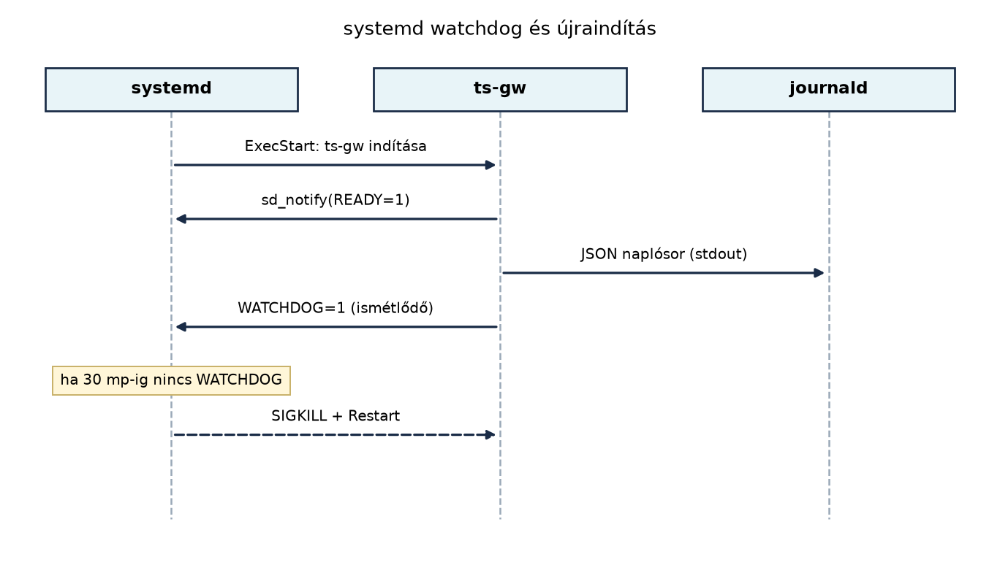

A A ts-gw szolgáltatás C++-ban: protokollfordítás
MQTT-re alfejezetben elkészített ts-gw már lefordítható
és kézzel elindítható, de éles környezetben ez kevés. Az üvegházban futó
gatewaynek akkor is élnie kell, ha a folyamat összeomlik, a gép
újraindul, vagy egy frissítés hibásnak bizonyul. Emellett a logokból
gyorsan ki kell derülnie, hogy melyik csomópont üzenete veszett el, és a
telepítésnek reprodukálhatónak kell lennie a fejlesztői géptől az edge
hardverig.
Ebben az alfejezetben a ts-gw-t Linux-szolgáltatásként
és konténerben is üzemeltethetővé tesszük. A systemd biztosítja az
automatikus újraindítást és a watchdog-felügyeletet, a strukturált
JSON-naplózás a journald-ben kereshetővé teszi az eseményeket, a
többlépcsős Docker-build pedig kicsi, jól korlátozott futásidejű
image-et eredményez.
Definíció. A systemd unit a systemd által
kezelt erőforrás (szolgáltatás, socket, timer, mount stb.) deklaratív
leírása. A szolgáltatások unitfájlja .service
kiterjesztésű, és a [Unit], [Service],
[Install] szekciókban adja meg, hogy mit, hogyan és mikor
indítson a rendszer.
Definíció. A systemd watchdog egy
szoftveres felügyelet: ha a szolgáltatás WatchdogSec
értéken belül nem küld életjelet, a systemd megöli és az újraindítási
politika szerint újraindítja a folyamatot. A folyamat a
WATCHDOG=1 üzenetet az sd_notify interfészen
keresztül, a $NOTIFY_SOCKET Unix-socketre írva jelzi.
Definíció. A Type=notify indítási mód azt
jelenti, hogy a szolgáltatás nem akkor tekinthető sikeresen elindultnak,
amikor a fork visszatér, hanem amikor a folyamat READY=1
üzenetet küld. Ugyanezen a csatornán megy a watchdog-életjel is.
Definíció. A többlépcsős Docker-build olyan image-építés, ahol a buildhez szükséges eszközöket (compiler, fejlesztői fejlécek) egy külön építő konténerbe tesszük, majd a kész binárist és a minimális futásidejű függőségeket egy második, jóval kisebb image-be másoljuk.
Az alábbi sequence-diagram a systemd és a ts-gw
együttműködését mutatja watchdog felügyelet mellett:

A szolgáltatás tehát három dolgot ír: a szabványos kimenetre
JSON-sorokat (napló), a $NOTIFY_SOCKET-re
READY=1-et és periodikusan WATCHDOG=1-et
(életjel). A journald ezeket együtt tárolja, és
journalctl -u ts-gw paranccsal lekérdezhető.
A gateway üzemeltetési módjának kiválasztása több szemponttól függ:
| Szempont | systemd szolgáltatás | Docker-konténer |
|---|---|---|
| Újraindítás, watchdog | natív, jól integrált (Restart,
WatchdogSec) |
a konténer újraindítása Docker/Compose szinten, watchdog a konténeren belül vagy healthcheckkel |
| Erőforrás-limit | MemoryMax, CPUQuota,
TasksMax |
mem_limit, cpus,
pids_limit |
| Függőségek kezelése | OS-szintű csomagok, verzióütközések lehetnek | az image-ben szigetelt, reprodukálható |
| Frissítés | bináris csere + systemctl restart |
image-tag csere + docker compose up -d, rollback
egyszerű |
| Naplózás | közvetlenül journald-be | konténerlogból gyűjtőbe, vagy journald-driverrel |
Egyetlen edge-gatewayn általában a systemd a természetes választás, mert nincs plusz réteg, és a watchdog közvetlenül a folyamatot figyeli. A konténer akkor előnyös, ha a teljes edge-szoftvercsomagot (gateway + MQTT-kliens + konfiguráció) egyetlen egységként akarjuk szállítani és több gépre telepíteni. A TerraSense laborban mindkettőt bemutatjuk: a systemd a hoston futó natív telepítés, a Docker a hordozható változat.
Munkakönyvtár: ~/iot-labor/i038
mkdir -p ~/iot-labor/i038 && cd ~/iot-labor/i038
cp -r ../i036/ts-gw .A labor előfeltétele az A ts-gw szolgáltatás
C++-ban: protokollfordítás MQTT-re alfejezetből származó
ts-gw forráskód. Ebből indulunk ki, és bővítjük
watchdog-támogatással és JSON-naplózással.
Először készítsük el a konfigurációs fájlt, amelyet a systemd-unit és
a program is olvas. Tegyük fel, hogy a telepítési útvonal
/etc/ts-gw/config.toml:
# /etc/ts-gw/config.toml
[mqtt]
broker = "localhost"
port = 1883
client_id = "ts-gw"
[udp]
port = 41234
[logging]
level = "info"A program a konfigurációs fájlt olvassa, de a környezeti változók
felülbírálhatják a legfontosabb értékeket. A main.cpp
elején egy egyszerű konfigurációbetöltést alkalmazunk:
#include <cstdlib>
#include <fstream>
#include <string>
struct Config {
std::string mqtt_broker = "localhost";
int mqtt_port = 1883;
std::string client_id = "ts-gw";
int udp_port = 41234;
std::string log_level = "info";
};
Config load_config(const std::string& path) {
Config cfg;
// valódi TOML-parszolás helyett itt csak a környezeti változókat kezeljük:
if (const char* env = std::getenv("TS_GW_MQTT_BROKER")) cfg.mqtt_broker = env;
if (const char* env = std::getenv("TS_GW_MQTT_PORT")) cfg.mqtt_port = std::stoi(env);
if (const char* env = std::getenv("TS_GW_CLIENT_ID")) cfg.client_id = env;
if (const char* env = std::getenv("TS_GW_UDP_PORT")) cfg.udp_port = std::stoi(env);
if (const char* env = std::getenv("TS_GW_LOG_LEVEL")) cfg.log_level = env;
return cfg;
}Ellenőrzési igény. A fenti kódban a TOML-fájl
tényleges feldolgozása nincs implementálva, csak a környezeti változókat
kezeli. Éles kódban használjunk egy TOML-könyvtárat (például
toml++), vagy egyszerűsítsünk INI formátumra.
A systemd értesítéshez linkeljük a libsystemd-t. A
CMakeLists.txt-ben:
find_package(PkgConfig REQUIRED)
pkg_check_modules(SYSTEMD REQUIRED libsystemd)
target_link_libraries(ts-gw PRIVATE ${SYSTEMD_LIBRARIES})
target_include_directories(ts-gw PRIVATE ${SYSTEMD_INCLUDE_DIRS})A program elején a watchdog-életjelet egy külön szál küldi, a fő szál pedig a saját ciklusát futtatja. A lényeg, hogy a watchdog-intervallum fele alatt mindig küldjünk életjelet:
#include <systemd/sd-daemon.h>
#include <thread>
#include <chrono>
#include <iostream>
void watchdog_loop(std::chrono::seconds interval) {
while (true) {
sd_notify(0, "WATCHDOG=1");
std::this_thread::sleep_for(interval / 2);
}
}
int main() {
// ...
sd_notify(0, "READY=1");
std::thread wd(watchdog_loop, std::chrono::seconds(30));
wd.detach();
// fő ciklus...
}A strukturált naplózáshoz egy segédfüggvényt adunk, amely JSON-sort
ír a stdout-ra:
void log_json(const std::string& level, const std::string& msg) {
std::cout << "{\"ts\":\"" << current_iso8601_utc()
<< "\",\"level\":\"" << level
<< "\",\"msg\":\"" << msg << "\"}" << std::endl;
}A current_iso8601_utc() egy segédfüggvény, amely az
aktuális időt ISO 8601 formátumban adja vissza. A systemd a szabványos
kimenetet automatikusan a journald-be irányítja, így a JSON-sorok a
journald-ben is megjelennek.
Hozzuk létre az ~/iot-labor/i038/ts-gw.service
fájlt:
[Unit]
Description=TerraSense Gateway (ts-gw)
After=network-online.target
Wants=network-online.target
[Service]
Type=notify
ExecStart=/usr/local/bin/ts-gw --config /etc/ts-gw/config.toml
Restart=on-failure
RestartSec=5s
WatchdogSec=30s
EnvironmentFile=-/etc/default/ts-gw
User=tsgw
Group=tsgw
NoNewPrivileges=true
ProtectSystem=full
ProtectHome=true
MemoryMax=256M
CPUQuota=50%
[Install]
WantedBy=multi-user.targetMagyarázat: - Type=notify miatt a systemd várja a
READY=1 üzenetet. - Restart=on-failure és
RestartSec=5s biztosítja az újraindítást hibás kilépés
esetén. - WatchdogSec=30s azt jelenti, hogy a folyamatnak
30 másodpercen belül legalább egyszer WATCHDOG=1-et kell
küldenie. - MemoryMax=256M és CPUQuota=50%
erőforrás-korlátot szab; a CPUQuota egy mag 50%-át jelenti. -
ProtectSystem=full és NoNewPrivileges=true
csökkenti a támadási felületet.
A unitot a rendszerre telepítve:
sudo cp ts-gw.service /etc/systemd/system/
sudo systemctl daemon-reload
sudo systemctl enable --now ts-gwHa a program nincs még telepítve, a
systemd-analyze verify csak szintaktikai ellenőrzést
végez:
systemd-analyze verify ts-gw.serviceKészítsünk Dockerfile-t:
# Build stage
FROM ubuntu:24.04 AS build
RUN apt-get update && apt-get install -y --no-install-recommends \
g++ cmake pkg-config libpaho-mqtt-dev libsystemd-dev
WORKDIR /src
COPY . .
RUN cmake -B build && cmake --build build -j$(nproc)
# Runtime stage
FROM ubuntu:24.04
RUN apt-get update && apt-get install -y --no-install-recommends \
libpaho-mqtt1.0 libsystemd0 && rm -rf /var/lib/apt/lists/*
COPY --from=build /src/build/ts-gw /usr/local/bin/ts-gw
RUN useradd --system --no-create-home --shell /usr/sbin/nologin tsgw
USER tsgw
ENTRYPOINT ["/usr/local/bin/ts-gw"]Ellenőrzési igény. A Paho MQTT C++ csomag pontos
neve (libpaho-mqtt-dev, libpaho-mqtt1.0)
Ubuntu 24.04-en ellenőrizendő; a laborban a
apt-cache search paho paranccsal győződjünk meg róla.
A Compose-részlet a közös ~/iot-labor/stack/compose.yaml
fájlba illeszthető:
services:
ts-gw:
build:
context: ../i038/ts-gw
container_name: ts-gw
environment:
TS_GW_MQTT_BROKER: mosquitto
TS_GW_MQTT_PORT: "1883"
TS_GW_UDP_PORT: "41234"
ports:
- "41234:41234/udp"
depends_on:
- mosquitto
restart: unless-stopped
mem_limit: 256m
cpus: 0.5
pids_limit: 128A mosquitto szolgáltatás már létezik a stackben. A
ts-gw így a brokerhez a belső hálózaton csatlakozik, a
TS_GW_MQTT_BROKER környezeti változóval felülírva az
alapértelmezett localhost-ot.
Build és futtatás:
cd ~/iot-labor/stack
docker compose up -d --build ts-gw
docker compose logs -f ts-gwNatív systemd-telepítésnél a binárist verziózott könyvtárakba
telepítjük, és egy current szimbolikus link mutat az aktív
verzióra. Az ExecStart a linkre hivatkozik. Frissítéskor az
új binárist a /opt/ts-gw/v1.3.0/ könyvtárba másoljuk, majd
ln -sfn /opt/ts-gw/v1.3.0 /opt/ts-gw/current és
systemctl restart ts-gw. Ha a folyamat nem indul el, a
linket visszaállítjuk az előző verzióra. Ez az A/B vagy szimbolikus
linkes rollback az OTA-frissítés: A/B képek,
rollback, delta, fokozatos kiadás alfejezetben tér vissza
részletesen.
Konténeres telepítésnél a rollback egyszerűbb: a ts-gw
szolgáltatást korábbi image-taggel indítjuk újra, például
image: ts-gw:1.2.0 helyett ts-gw:1.1.0, majd
docker compose up -d.
Továbbvitt eredmény. A ts-gw.service
unit és a Dockerfile a Megfigyelhetőség
végponttól végpontig: metrikák, naplók, nyomkövetés alfejezetben a
log- és metrika-gyűjtés alapjául szolgál; a frissítési stratégia az OTA-frissítés: A/B képek, rollback, delta, fokozatos
kiadás alfejezetbe csatlakozik, a teljes stack pedig a Záróprojekt: a teljes TerraSense rendszer összeállítása
és átvétele alfejezetben áll össze.
| Hibatünet | Lehetséges ok | Javítás |
|---|---|---|
A szolgáltatás nem indul el, status=203/EXEC |
rossz bináris útvonal vagy hiányzó jogosultság | ellenőrizzük az ExecStart útvonalat és a
User-t; journalctl -u ts-gw -b részleteket
ad |
| A watchdog újraindítja a folyamatot | a WATCHDOG=1 üzenet nem érkezik elég gyakran |
ellenőrizzük a watchdog-szálat, és hogy a sd_notify a
$NOTIFY_SOCKET-re ír-e |
| A JSON-naplósorok nem jelennek meg a journald-ben | a program nem a stdout-ra ír, hanem fájlba |
irányítsuk a naplózást std::cout-ra, vagy használjunk
syslog-ot |
| A Docker-konténer nem éri el a Mosquittót | a TS_GW_MQTT_BROKER értéke localhost, nem
a szolgáltatásnév |
Compose-ban a környezeti változót a belső szolgáltatásnévre állítsuk
(mosquitto) |
| A konténer memórialimitet lép át és meghal | túl alacsony mem_limit vagy memóriaszivárgás |
növeljük a limitet, vagy profilozzuk a folyamatot |
A Type=notify elhagyása watchdoggal
együtt. Ha a unit Type=simple, a systemd nem
figyeli a READY=1 üzenetet, és a WatchdogSec
csak akkor működik, ha a program mégis küld WATCHDOG=1-et –
de az indítási állapot nem lesz megbízható. A Type=notify
és a watchdog együtt értelmes.
JSON-naplózás rossz mezőnevekkel. Ha a mezőnevek
nem konzisztensek (timestamp, ts,
time keverednek), a későbbi naplóelemzés és a
Grafana-dashboardok nem tudnak egységesen szűrni. A TerraSense-ben a
ts, level, msg mezőket
használjuk, és ezt a konvenciót a Megfigyelhetőség
végponttól végpontig alfejezet is átveszi.
A rendszeróra és a naplóidő keverése. A gateway helyi ideje és a UTC közötti különbség gyakran okoz sorrendi hibákat. Minden naplóbejegyzés UTC ISO 8601 formátumú legyen, ahogy a telemetria is.
Erőforráskorlát nélküli konténer. A
mem_limit és cpus elhagyása lehetővé teszi,
hogy egy hibás gateway az egész edge-eszköz erőforrásait lefoglalja, ami
a szenzorcsomópontokról érkező adatok elvesztéséhez vezethet.
Fogalmi kérdés. Miért előnyösebb a
Type=notify a Type=simple-höz képest, ha
watchdogot is használunk? Milyen hibát kerülünk el vele?
Tervezési feladat. Egy gateway szolgáltatás
WatchdogSec=30s. Mekkora legyen a watchdog-üzenetek küldési
periódusa, hogy a systemd ne indítsa újra a folyamatot, ha a rendszer
egy rövid ideig (pl. 2 s) lassú? Válaszát indokolja.
Implementációs feladat. Egészítse ki a
ts-gw programot úgy, hogy a watchdog-életjelet ne külön
szál, hanem a fő ciklus minden iterációjában küldje, és a ciklus
periódusát a WatchdogSec harmadára állítsa be. Módosítsa a
main függvényt és a unitfájlt is.
Hibakeresési feladat. A Docker-konténer
ts-gw nem csatlakozik a Mosquitto brokerhez. A logban a
connection refused üzenet látható. Hogyan deríti ki, hogy a
TS_GW_MQTT_BROKER környezeti változó helyes-e, és a
depends_on miért nem elég a kapcsolat biztosításához?
Javítsa a Compose-fájlt.
A Type=notify esetén a systemd csak akkor tekinti a
szolgáltatást sikeresen elindultnak, ha a folyamat explicit
READY=1 üzenetet küld. Ha a program elindul, de valamiért
nem éri el a működő állapotot (pl. nem tud csatlakozni a brokerhez), a
Type=simple mellett a systemd már sikeresnek látná, és nem
indítaná újra. A Type=notify ezt a hibát felfedi, és a
Restart=on-failure beavatkozik.
A watchdog-üzenetek periódusának kisebbnek kell lennie, mint a
WatchdogSec fele, hogy egyetlen késés ne okozzon
újraindítást. Jó választás például WatchdogSec / 3 = 10 s.
Így két egymást követő késés (20 s) is még a 30 s alatt marad, és a
rendszer rövid terhelése nem vált ki téves újraindítást.
A fő ciklusban a watchdog-küldés:
#include <systemd/sd-daemon.h>
#include <thread>
#include <chrono>
int main() {
// ...
sd_notify(0, "READY=1");
const auto period = std::chrono::seconds(10); // WatchdogSec=30, harmada
while (running) {
sd_notify(0, "WATCHDOG=1");
// ... UDP fogadás, MQTT küldés ...
std::this_thread::sleep_for(period);
}
}A unitfájlban WatchdogSec=30 marad. Így a ciklus
periódusa 10 s, ami kisebb a watchdog-intervallum felénél (15 s).
docker compose exec ts-gw env | grep TS_GW. Ha a
TS_GW_MQTT_BROKER értéke localhost, az a
konténer saját hálózatát jelenti, nem a stack belső szolgáltatását.
Állítsuk mosquitto-ra. A depends_on csak az
indítási sorrendet biztosítja, nem várja meg, amíg a broker ténylegesen
fogadja a kapcsolatokat. Ezért a ts-gw indulhat a Mosquitto
előtt, ami connection refused hibát okoz. Megoldás:
depends_on mellett condition: service_healthy
és a Mosquitto szolgáltatás healthcheckje, vagy a ts-gw-ben
újrapróbálkozási logika.A ts-gw üzemeltetéséhez systemd-unitot készítettünk
Type=notify, Restart=on-failure és
WatchdogSec=30s beállításokkal; a program
sd_notify-on keresztül küld READY=1 és
WATCHDOG=1 üzeneteket. A naplózást JSON-sorokként a
stdoutra írjuk, amelyet a journald gyűjt. A Docker-többlépcsős build
külön építő és futásidejű konténert használ; a Compose-ban
mem_limit, cpus és pids_limit
erőforráskorlátokat adtunk meg. A konfigurációt fájlból és környezeti
változókból töltjük be; a frissítés és visszaállítás natív rendszeren
szimbolikus linkkel, konténerben image-tag cserével történik.
Továbbvitt eredmények: ts-gw.service,
Dockerfile, a Compose-részlet és a JSON-naplózási konvenció
az Megfigyelhetőség, az OTA és a Záróprojekt
alfejezetekhez csatlakozik.
man systemd.service,
man systemd.exec, man sd_notify. Az elérhető
opciók (pl. MemoryMax, CPUQuota,
ProtectSystem) pontos szintaxisa a rendszer verziójától
függ; Ubuntu 24.04 systemd 255-ön ellenőrizendő.mem_limit,
cpus, pids_limit mezők verziófüggők; a Compose
v2-ben a deploy.resources.limits ajánlott.libpaho-mqtt-dev, libpaho-mqtt-cpp-dev)
ellenőrizendő; a laborban apt-cache search paho parancsot
használjunk.sd_notify és a $NOTIFY_SOCKET
viselkedését a sd_notify(3) man-oldal írja le.